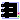
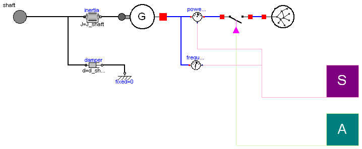
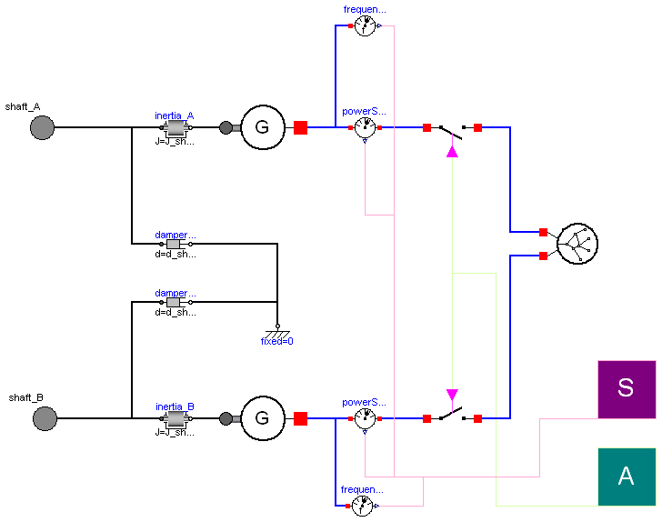
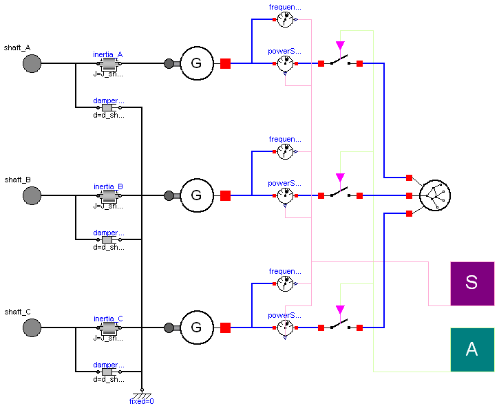
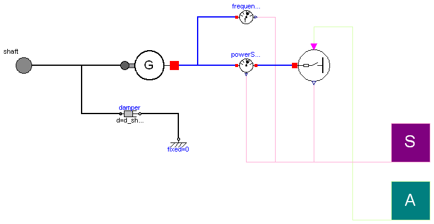

| Name | Description |
|---|---|
| Alternator group in configuration single-shaft (one generator) | |
| Alternator group in configuration double-shaft (two generator) | |
|  TripleShaft_static | Alternator group in configuration triple-shaft (three generator) |
| Alternator group in configuration single-shaft (one generator) | |
 ThermoPower.PowerPlants.ElectricGeneratorGroup.Examples.SingleShaft_static
ThermoPower.PowerPlants.ElectricGeneratorGroup.Examples.SingleShaft_static
| Type | Name | Default | Description |
|---|---|---|---|
| Frequency | fn | 50 | Nominal frequency of the grid [Hz] |
| Power | Pn | Nominal power installed on the grid [W] | |
| Real | eta | 1 | Conversion efficiency of the electric generator |
| MomentOfInertia | J_shaft | 0 | Total inertia of the system [kg.m2] |
| Real | d_shaft | 0 | Damping constant of the shaft |
| AngularVelocity | omega_nom | 2*Modelica.Constants.pi*fn/2 | Nominal angular velocity of the shaft [rad/s] |
| Type | Name | Description |
|---|---|---|
| Flange_a | shaft | |
| Sensors | SensorsBus | |
| Actuators | ActuatorsBus |
model SingleShaft_static
"Alternator group in configuration single-shaft (one generator)"
extends ThermoPower.PowerPlants.ElectricGeneratorGroup.Interfaces.SingleShaft;
Electrical.Grid grid(fn=fn, Pn=Pn);
Electrical.Generator generator(eta=eta);
Components.PowerSensor powerSensor;
Components.FrequencySensor frequencySensor;
Modelica.Mechanics.Rotational.Inertia inertia(J=J_shaft, w_start=omega_nom,
initType=Options.steadyState);
Modelica.Mechanics.Rotational.Damper damper(d=d_shaft);
Modelica.Mechanics.Rotational.Fixed fixed;
Electrical.Breaker breaker;
equation
connect(inertia.flange_a, shaft);
connect(damper.flange_a, shaft);
connect(damper.flange_b, fixed.flange_b);
connect(generator.powerConnection, powerSensor.port_a);
connect(frequencySensor.port, generator.powerConnection);
connect(powerSensor.port_b, breaker.connection1);
connect(breaker.connection2, grid.connection);
connect(ActuatorsBus.breakerClosed, breaker.closed);
connect(SensorsBus.power, powerSensor.W);
connect(SensorsBus.frequency, frequencySensor.f);
connect(generator.shaft, inertia.flange_b);
end SingleShaft_static;
 ThermoPower.PowerPlants.ElectricGeneratorGroup.Examples.DoubleShaft_static
ThermoPower.PowerPlants.ElectricGeneratorGroup.Examples.DoubleShaft_static
| Type | Name | Default | Description |
|---|---|---|---|
| Frequency | fn | 50 | Nominal frequency of the grid [Hz] |
| Power | Pn | Nominal power installed on the grid [W] | |
| Generator-Shaft A | |||
| Real | eta_A | 1 | Conversion efficiency of the electric generator |
| MomentOfInertia | J_shaft_A | 0 | Total inertia of the steam turbogenerator [kg.m2] |
| Real | d_shaft_A | 0 | Damping constant of the shaft |
| AngularVelocity | omega_nom_A | 2*Modelica.Constants.pi*fn/2 | Nominal angular velocity of the shaft [rad/s] |
| Generator-Shaft B | |||
| Real | eta_B | 1 | Conversion efficiency of the electric generator |
| MomentOfInertia | J_shaft_B | 0 | Total inertia of the steam turbogenerator [kg.m2] |
| Real | d_shaft_B | 0 | Damping constant of the shaft |
| AngularVelocity | omega_nom_B | 2*Modelica.Constants.pi*fn/2 | Nominal angular velocity of the shaft [rad/s] |
| Type | Name | Description |
|---|---|---|
| Flange_a | shaft_B | |
| Flange_a | shaft_A | |
| Sensors | SensorsBus | |
| Actuators | ActuatorsBus |
model DoubleShaft_static
"Alternator group in configuration double-shaft (two generator)"
extends ThermoPower.PowerPlants.ElectricGeneratorGroup.Interfaces.DoubleShaft;
Electrical.Generator generator_A(eta=eta_A);
Modelica.Mechanics.Rotational.Inertia inertia_A(J=J_shaft_A, w_start=
omega_nom_A);
Modelica.Mechanics.Rotational.Damper damper_A(d=d_shaft_A);
Modelica.Mechanics.Rotational.Fixed fixed;
Electrical.Breaker breaker_A;
Electrical.Generator generator_B(eta=eta_B);
Modelica.Mechanics.Rotational.Inertia inertia_B(J=J_shaft_B, w_start=
omega_nom_B);
Modelica.Mechanics.Rotational.Damper damper_B(d=d_shaft_B);
Electrical.Breaker breaker_B;
Components.PowerSensor powerSensor_A;
Components.FrequencySensor frequencySensor_A;
Components.PowerSensor powerSensor_B;
Components.FrequencySensor frequencySensor_B;
ThermoPower.PowerPlants.ElectricGeneratorGroup.Components.Grid_2in grid(
Pn=Pn, fn=fn);
equation
connect(inertia_B.flange_a, shaft_B);
connect(generator_B.shaft, inertia_B.flange_b);
connect(powerSensor_B.port_a, generator_B.powerConnection);
connect(frequencySensor_B.port, generator_B.powerConnection);
connect(breaker_B.connection1, powerSensor_B.port_b);
connect(breaker_A.connection1, powerSensor_A.port_b);
connect(powerSensor_A.port_a, generator_A.powerConnection);
connect(frequencySensor_A.port, generator_A.powerConnection);
connect(damper_B.flange_a, shaft_B);
connect(damper_B.flange_b, fixed.flange_b);
connect(damper_A.flange_b, fixed.flange_b);
connect(damper_A.flange_a, shaft_A);
connect(inertia_A.flange_a, shaft_A);
connect(inertia_A.flange_b, generator_A.shaft);
connect(ActuatorsBus.breakerClosed_shaftA, breaker_A.closed);
connect(ActuatorsBus.breakerClosed_shaftB, breaker_B.closed);
connect(SensorsBus.power_shaftA, powerSensor_A.W);
connect(SensorsBus.power_shaftB, powerSensor_B.W);
connect(SensorsBus.frequency_shaftA, frequencySensor_A.f);
connect(SensorsBus.frequency_shaftB, frequencySensor_B.f);
connect(grid.connection_B, breaker_B.connection2);
connect(grid.connection_A, breaker_A.connection2);
end DoubleShaft_static;
 ThermoPower.PowerPlants.ElectricGeneratorGroup.Examples.TripleShaft_static
ThermoPower.PowerPlants.ElectricGeneratorGroup.Examples.TripleShaft_static
| Type | Name | Default | Description |
|---|---|---|---|
| Frequency | fn | 50 | Nominal frequency of the grid [Hz] |
| Power | Pn | Nominal power installed on the grid [W] | |
| Generator-Shaft A | |||
| Real | eta_A | 1 | Conversion efficiency of the electric generator |
| MomentOfInertia | J_shaft_A | 0 | Total inertia of the steam turbogenerator [kg.m2] |
| Real | d_shaft_A | 0 | Damping constant of the shaft |
| AngularVelocity | omega_nom_A | 2*Modelica.Constants.pi*fn/2 | Nominal angular velocity of the shaft [rad/s] |
| Generator-Shaft B | |||
| Real | eta_B | 1 | Conversion efficiency of the electric generator |
| MomentOfInertia | J_shaft_B | 0 | Total inertia of the steam turbogenerator [kg.m2] |
| Real | d_shaft_B | 0 | Damping constant of the shaft |
| AngularVelocity | omega_nom_B | 2*Modelica.Constants.pi*fn/2 | Nominal angular velocity of the shaft [rad/s] |
| Generator-Shaft C | |||
| Real | eta_C | 1 | Conversion efficiency of the electric generator |
| MomentOfInertia | J_shaft_C | 0 | Total inertia of the steam turbogenerator [kg.m2] |
| Real | d_shaft_C | 0 | Damping constant of the shaft |
| AngularVelocity | omega_nom_C | 2*Modelica.Constants.pi*fn/2 | Nominal angular velocity of the shaft [rad/s] |
| Type | Name | Description |
|---|---|---|
| Flange_a | shaft_B | |
| Flange_a | shaft_A | |
| Flange_a | shaft_C | |
| Sensors | SensorsBus | |
| Actuators | ActuatorsBus |
model TripleShaft_static
"Alternator group in configuration triple-shaft (three generator)"
extends ThermoPower.PowerPlants.ElectricGeneratorGroup.Interfaces.TripleShaft;
Electrical.Generator generator_A(eta=eta_A);
Components.PowerSensor powerSensor_A;
Components.FrequencySensor frequencySensor_A;
Modelica.Mechanics.Rotational.Inertia inertia_A(J=J_shaft_A, w_start=
omega_nom_A);
Modelica.Mechanics.Rotational.Damper damper_A(d=d_shaft_A);
Electrical.Breaker breaker_A;
Electrical.Generator generator_B(eta=eta_B);
Components.PowerSensor powerSensor_B;
Components.FrequencySensor frequencySensor_B;
Modelica.Mechanics.Rotational.Inertia inertia_B(J=J_shaft_B, w_start=
omega_nom_B);
Modelica.Mechanics.Rotational.Damper damper_B(d=d_shaft_B);
Modelica.Mechanics.Rotational.Fixed fixed;
Electrical.Breaker breaker_B;
Electrical.Generator generator_C(eta=eta_C);
Components.PowerSensor powerSensor_C;
Components.FrequencySensor frequencySensor_C;
Modelica.Mechanics.Rotational.Inertia inertia_C(J=J_shaft_C, w_start=
omega_nom_C);
Modelica.Mechanics.Rotational.Damper damper_C(d=d_shaft_C);
Electrical.Breaker breaker_C;
Components.Grid_3in grid_3in(Pn=Pn, fn=fn);
equation
connect(fixed.flange_b, damper_B.flange_b);
connect(damper_C.flange_b, fixed.flange_b);
connect(fixed.flange_b, damper_A.flange_b);
connect(inertia_C.flange_b, generator_C.shaft);
connect(generator_C.powerConnection, powerSensor_C.port_a);
connect(powerSensor_C.port_b, breaker_C.connection1);
connect(breaker_B.connection1, powerSensor_B.port_b);
connect(powerSensor_B.port_a, generator_B.powerConnection);
connect(generator_B.shaft, inertia_B.flange_b);
connect(inertia_B.flange_a, shaft_B);
connect(inertia_C.flange_a, shaft_C);
connect(inertia_A.flange_a, shaft_A);
connect(inertia_A.flange_b, generator_A.shaft);
connect(generator_A.powerConnection, powerSensor_A.port_a);
connect(powerSensor_A.port_b, breaker_A.connection1);
connect(frequencySensor_A.port, generator_A.powerConnection);
connect(frequencySensor_B.port, generator_B.powerConnection);
connect(frequencySensor_C.port, generator_C.powerConnection);
connect(damper_C.flange_a, shaft_C);
connect(damper_B.flange_a, shaft_B);
connect(damper_A.flange_a, shaft_A);
connect(ActuatorsBus.breakerClosed_shaftC, breaker_C.closed);
connect(ActuatorsBus.breakerClosed_shaftB, breaker_B.closed);
connect(ActuatorsBus.breakerClosed_shaftA, breaker_A.closed);
connect(SensorsBus.power_shaftC, powerSensor_C.W);
connect(SensorsBus.frequency_shaftC, frequencySensor_C.f);
connect(SensorsBus.power_shaftB, powerSensor_B.W);
connect(SensorsBus.frequency_shaftB, frequencySensor_B.f);
connect(SensorsBus.power_shaftA, powerSensor_A.W);
connect(SensorsBus.frequency_shaftA, frequencySensor_A.f);
connect(grid_3in.connection_B, breaker_B.connection2);
connect(grid_3in.connection_C, breaker_C.connection2);
connect(grid_3in.connection_A, breaker_A.connection2);
end TripleShaft_static;
 ThermoPower.PowerPlants.ElectricGeneratorGroup.Examples.GeneratorGroup
ThermoPower.PowerPlants.ElectricGeneratorGroup.Examples.GeneratorGroup
| Type | Name | Default | Description |
|---|---|---|---|
| Frequency | fn | 50 | Nominal frequency of the grid [Hz] |
| Real | eta | 1 | Conversion efficiency of the electric generator |
| MomentOfInertia | J_shaft | 0 | Total inertia of the system [kg.m2] |
| Real | d_shaft | 0 | Damping constant of the shaft |
| Power | Pmax | Outlet maximum power [W] | |
| Real | r_electrical | 0.2 | Electrical damping of generator/shaft system |
| Angle | delta_start | 0 | Loaded angle start value [rad] |
| Type | Name | Description |
|---|---|---|
| Flange_a | shaft | |
| Sensors | SensorsBus | |
| Actuators | ActuatorsBus |
model GeneratorGroup
"Alternator group in configuration single-shaft (one generator)"
extends Interfaces.SingleShaft( final Pn = 0, final omega_nom = 0);
parameter Modelica.SIunits.Power Pmax "Outlet maximum power";
parameter Real r_electrical=0.2
"Electrical damping of generator/shaft system";
parameter Modelica.SIunits.Angle delta_start = 0 "Loaded angle start value";
ThermoPower.Electrical.PowerSensor powerSensor;
ThermoPower.Electrical.FrequencySensor frequencySensor;
ThermoPower.Electrical.Generator generator(eta=eta, J=J_shaft);
ThermoPower.Electrical.NetworkGrid_Pmax network(
hasBreaker=true,
Pmax=Pmax,
J=J_shaft,
deltaStart=delta_start,
fnom=fn,
r=r_electrical);
Modelica.Mechanics.Rotational.Damper damper(d=d_shaft);
Modelica.Mechanics.Rotational.Fixed fixed;
equation
connect(SensorsBus.power, powerSensor.W);
connect(SensorsBus.frequency, frequencySensor.f);
connect(generator.shaft, shaft);
connect(generator.powerConnection, powerSensor.port_a);
connect(frequencySensor.port, generator.powerConnection);
connect(network.powerConnection, powerSensor.port_b);
connect(ActuatorsBus.ConnectedGenerator, network.closed);
connect(damper.flange_a, shaft);
connect(fixed.flange_b, damper.flange_b);
connect(SensorsBus.loadedAngle, network.delta_out);
end GeneratorGroup;